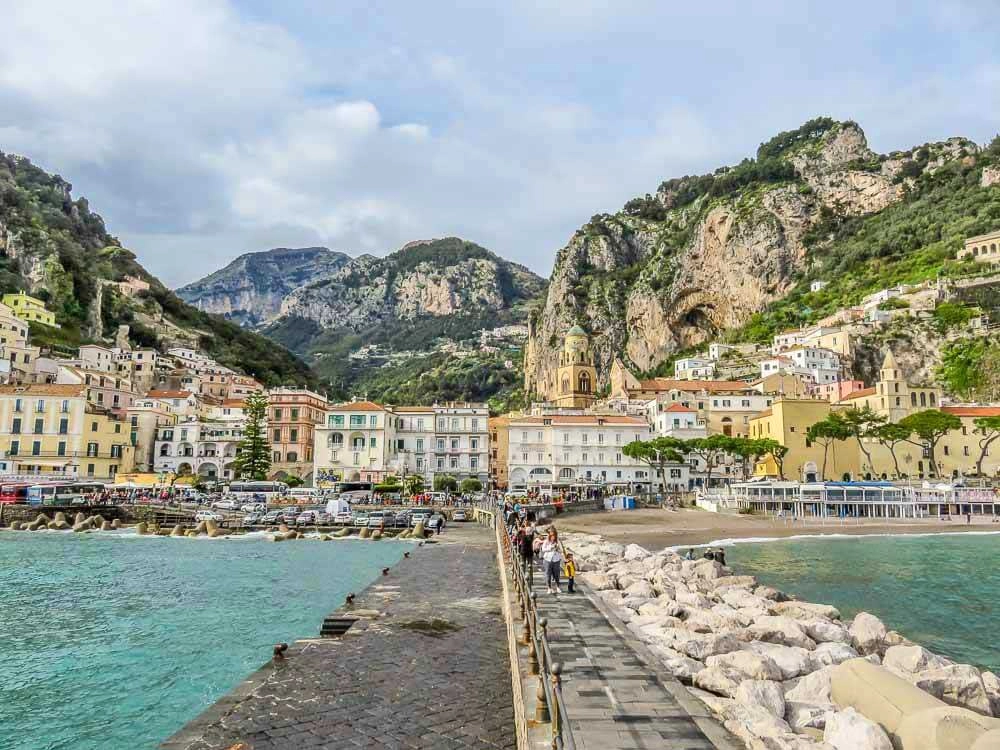

Amalfi é a maior cidade ao longo da Costa Amalfitana e, aparentemente, a que lhe dá o nome. É um dos sítios mais populares para ficar hospedado, a seguir a Sorrento, e uma excelente alternativa aos preços altos de Positano. A sua localização, precisamente a meio, pode ser muito vantajosa para visitar a costa em duas partes e sentidos diferentes: um dia para Este e outro dia para Oeste. A partir de Amalfi também é fácil apanhar um ferry para Capri, mas lugares mais distantes como Pompeia ou Nápoles já não ficam tão acessíveis. A cidade é bastante viva e movimentada. Tem uma grande praia de areia escura (não deixe de ir até à ponta do paredão para ver a cidade de frente) e um centro histórico pedonal com ruelas e tuneis cheios de óptimos restaurantes, gelatarias e pequenas mercearias. A cereja no topo do bolo é a sua majestosa Catedral, literalmente encaixada por entre os edifícios da praça central (Piazza Duomo). A não perder!
Amalfi, cidade